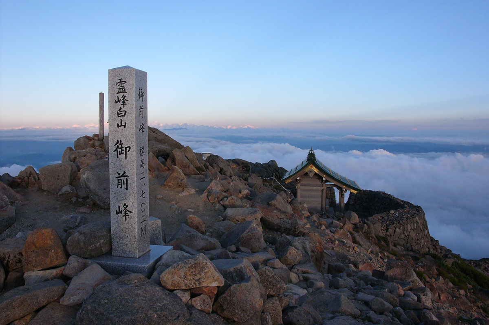
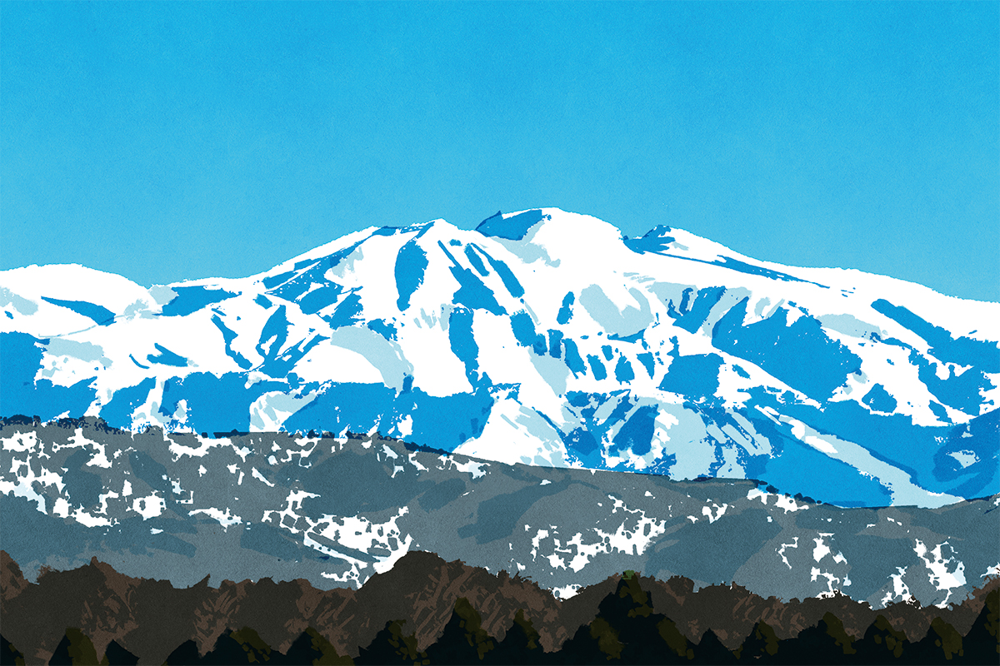
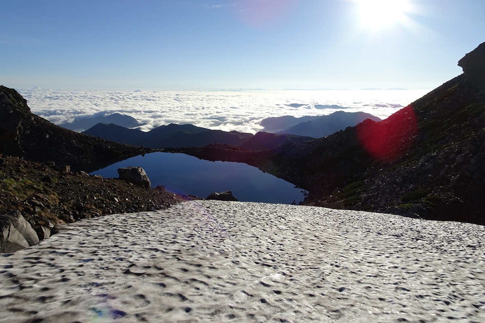
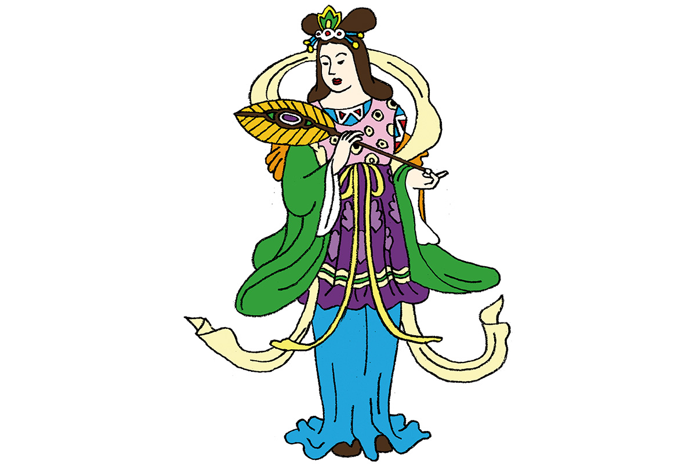
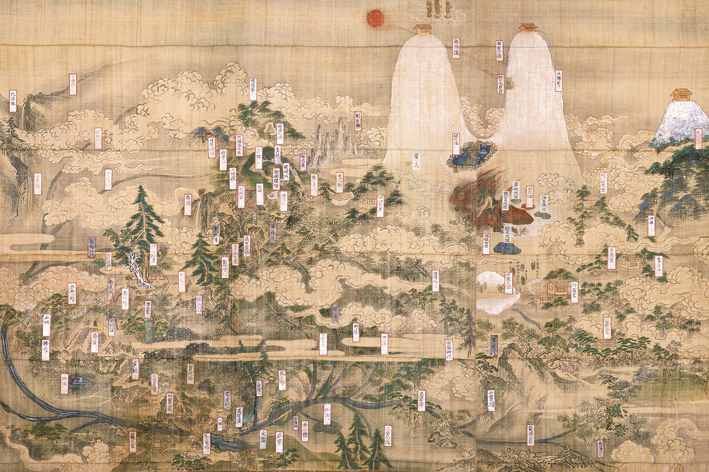
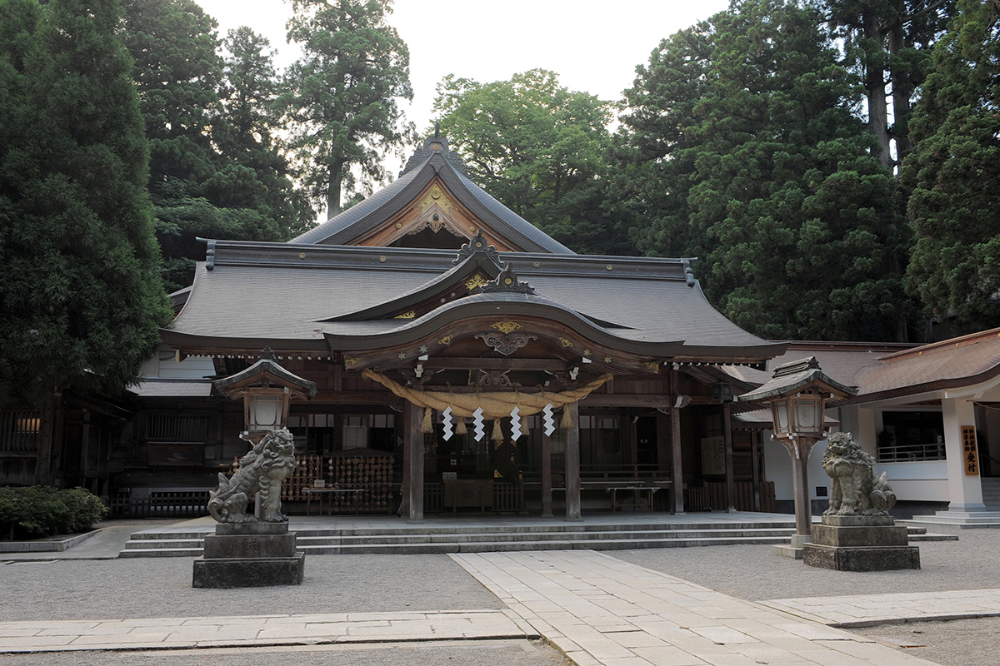

Префектура Исикава · Хакусан · святыни
Гора Хакусан: священная вершина, древняя тропа паломников и богиня, которая мирит людей

Фудзи, Татэяма и Хакусан называют тремя священными горами Японии. Паломники поднимались на них задолго до того, как появилось слово «туризм», и Хакусан, гора снега и воды, хранит эту традицию по сей день.
Гора
Белая вершина и четыре реки

Хакусаном называют целый хребет, который тянется с севера на юг. Из его снегов рождаются четыре большие реки, в том числе Тэдори, главная река префектуры Исикава, поэтому гору издавна почитают прежде всего как источник воды. Хакусан стоит в краю глубоких снегов, и считается, что имя ему дал снег, который зимой ослепительно сверкает на склонах.
Высшая точка хребта, пик Годзэнгаминэ, поднимается на 2702 метра. Вместе с соседними вершинами Онандзи и Бэссан он веками почитался как обитель трёх божеств, «трёх воплощений Хакусана». У каждой вершины был свой бог и свой буддийский образ: Годзэнгаминэ связывали с Одиннадцатиликой Каннон, Онандзи с буддой Амидой, Бэссан с бодхисаттвой Каннон.
Легенда
Монах Тайтё и дракон в горном озере
Первым на Хакусан, по преданию, поднялся монах Тайтё. Его жизнеописание составлено в 1329 году. Однажды во сне ему явилась Одиннадцатиликая Каннон и велела уйти в горы для подвижничества. Издали он видел вершину Хакусана и мечтал на неё взойти. И вот перед ним предстало божество горы в облике знатной дамы и позвало его к себе.
В 717 году Тайтё отправился на гору с двумя спутниками. Один был отшельником, который умел добывать рис, посылая свою чашу для подаяний летать по воздуху. Другой раньше служил лодочником. На вершине из горного озера поднялся девятиглавый царь драконов. Тайтё попросил его явить свой истинный облик, и дракон обернулся Одиннадцатиликой Каннон. Три года монах провёл в горах. В 2017 году отметили 1300 лет с того восхождения.

Миф
Кукури-химэ, богиня, которая мирит
Главным божеством Хакусана в эпоху Муромати (XIV–XVI века) стали считать богиню Кукури-химэ, а после 1868 года её почитают под именем Сираяма-химэ-но оками, «великая богиня Белой горы».

Её история уходит в те времена, когда Японии ещё не было. Божественная пара Идзанаги и Идзанами родила острова и множество богов, и каждому из них досталась своя роль и своя сила. Но настал день, когда супругам пришлось расстаться навсегда: Идзанами ушла в Ёми, страну мёртвых, а Идзанаги остался в мире живых. Когда они стояли на пороге этой последней разлуки, между ними встала Кукури-химэ и примирила их.
В «Кодзики», древнейшей японской летописи, богини нет совсем. Она появляется лишь в одной из версий мифа, которые приводит «Нихон сёки». Но этого единственного эпизода хватило, чтобы Кукури-химэ стали почитать как богиню, которая соединяет мужчину и женщину, а заодно помогает договориться в делах. Раз она сумела стать посредницей между умершей и живым, её называют и прародительницей шаманов. В святилища Кукури-химэ приходят молиться о хорошей паре.
Паломничество
Тропа из Кага
С середины эпохи Хэйан, то есть примерно с X века, культ Хакусана всё теснее связывался с монастырём Энрякудзи на горе Хиэй под Киото. Хакусан почитают в храмах школы Тэндай по всей стране, и при многих святилищах сохранились старинные представления но и обрядовые танцы эннэн и дэнгаку.
На вершину вели три паломнические тропы, их называли «дзэндзёдо», из трёх соседних провинций: Кага, Этидзэн и Мино. У начала каждой тропы стоял храм, где останавливались паломники. Начало тропы из Кага охранял храм Хакусан-дзи. После 1868 года храмы на тропах преобразовали в синтоистские святилища, и так храм Хакусан-дзи стал святилищем Сираяма-химэ.

Такие мандалы, появившиеся с XVI века, рассказывали паломникам о силе горы. На них изображён Тайтё за подвижничеством, а рядом женщина, которая нарушила запрет и поднялась на гору, закрытую для женщин: её фигура рассечена надвое. Страшные истории о нарушенных запретах рассказывали о силе горы.
Большая часть тропы из Кага сохранилась до сих пор как горная тропа. Она начинается у святилища Сираяма-химэ, проходит через деревню Одзо у подножия, ведёт к озеру Мидоригаикэ и заканчивается у Окумии на вершине.
Где увидеть
Святилище Сираяма-химэ

Святилище Сираяма-химэ называют Хакусан Хонгу, «главное святилище Хакусана». Оно стоит во главе примерно 2700 святилищ Хакусан по всей Японии. Расположено оно у подножия горы, а на вершине Годзэнгаминэ находится его Окумия, внутреннее святилище. Сюда приходят к богине согласия и добрых союзов: просить о хорошей паре и об удаче в переговорах. Отсюда же начинается тропа, по которой паломники когда-то шли к вершине.
Святилище Сираяма-химэ
- Адрес
- префектура Исикава, Хакусан, Санномия-мати, Ни 105-1
- Телефон
- +81 76-272-0680
- Сайт
- shirayama.or.jp
Фото: Кэнто Иида, Хитоми Иха (иллюстрации), Туристическая федерация города Хакусан, святилище Сираяма-химэ.